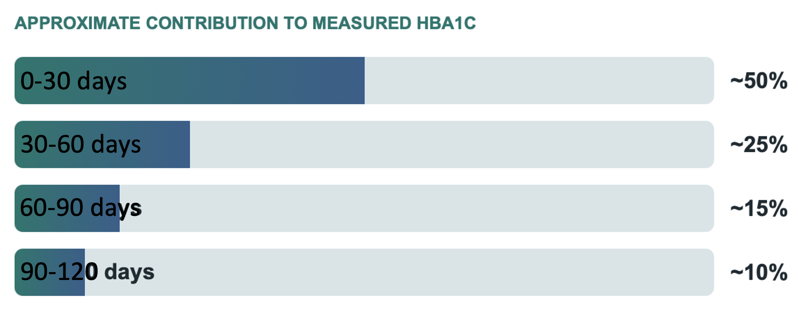
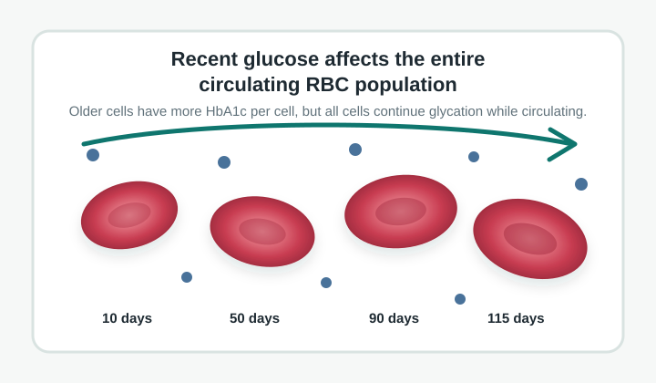
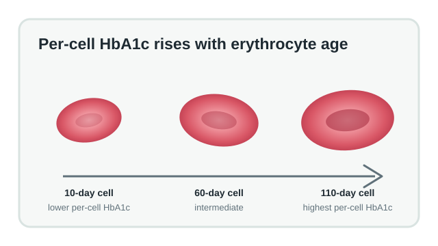
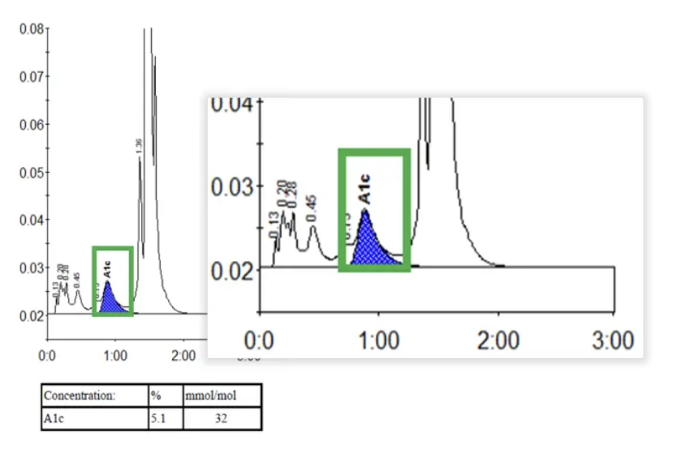
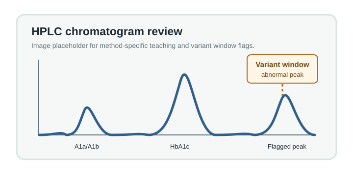

Explain HbA1c weighting
Describe why HbA1c reflects approximately 120 days of glycemia but is not a simple arithmetic average.
Clinical Chemistry and Laboratory Medicine for Pathology Residents
HbA1c is often taught as a 3-month marker of glycemia. In practice, the result is a weighted signal shaped by recent glucose exposure, erythrocyte turnover, hemoglobin variants, and method-specific analytic limitations.


Learning Objectives
Describe why HbA1c reflects approximately 120 days of glycemia but is not a simple arithmetic average.
Distinguish between the accumulation of HbA1c within individual erythrocytes as they age and the disproportionate influence of recent glycemia on the overall measured HbA1c.
Predict falsely low or falsely high HbA1c results caused by altered erythrocyte survival or erythropoiesis.
Choose appropriate laboratory follow-up when an HbA1c result conflicts with glucose data or an HPLC chromatogram is abnormal.
Background
HbA1c forms when glucose nonenzymatically glycates hemoglobin A. Because circulating erythrocytes survive for roughly 120 days, HbA1c is commonly used as an integrated marker of recent glycemia.
The clinically important nuance is that the measurement is weighted toward recent glucose exposure. A useful teaching model assigns about half of the final HbA1c to the preceding month, with progressively smaller contributions from earlier months.
This is why HbA1c can begin to fall within several weeks after improved glycemic control and why recent deterioration may affect the result before a full erythrocyte lifespan has elapsed.
| Time before measurement | Approximate contribution |
|---|---|
| 0-30 days | ~50% |
| 31-60 days | ~25% |
| 61-90 days | ~15% |
| 91-120 days | ~10% |
The exact weighting varies among individuals and should be treated as an approximation, not a biologic law.
Core Educational Content
Erythrocytes are continuously entering and leaving circulation. At any moment, the sample contains reticulocytes, young erythrocytes, middle-aged erythrocytes, and older erythrocytes. The HbA1c result is a composite of glycation across this entire mixed-age population.
HbA1c reflects glycemia over approximately 120 days, but the most recent month contributes roughly half of the final result.
A 10-day-old erythrocyte has had relatively little exposure to circulating glucose and therefore contains relatively little HbA1c. A 60-day-old erythrocyte has had more cumulative glucose exposure and generally contains more HbA1c. A 110-day-old erythrocyte has usually accumulated the greatest amount of HbA1c because glycation continues throughout the erythrocyte lifespan.
However, this does not mean that glucose from the earliest months dominates the reported HbA1c. The measured HbA1c reflects the entire circulating erythrocyte population, which is continuously renewed. Recent glucose influences the reported HbA1c because all surviving erythrocytes continue to acquire glycation while older erythrocytes are progressively removed from circulation and replaced by newly produced cells.

When intensive insulin therapy lowers blood glucose, the rate of new hemoglobin glycation decreases immediately in all surviving circulating erythrocytes. Simultaneously, older erythrocytes containing higher amounts of HbA1c are continuously removed from circulation and replaced by newly produced erythrocytes with lower HbA1c. Together, these processes allow the measured HbA1c to begin declining within 2–4 weeks, with substantial reductions often observed by 6–8 weeks.
Guidelines often reassess HbA1c about 3 months after therapy changes to capture the full effect, but meaningful movement may be measurable much earlier.
Hemolysis, acute blood loss, transfusion, or high erythropoietic turnover may falsely decrease HbA1c.
Iron deficiency, B12 deficiency, and asplenia may falsely increase HbA1c in some clinical settings. The underlying mechanisms remain incompletely understood.
Variants can cause analytic interference, altered RBC survival, absent HbA, or abnormal chromatographic peaks.
Mechanisms
About 1% of erythrocytes are removed and replaced daily, so most cells present today were also present last week.
A sudden glucose change exposes 5-day, 50-day, and 110-day cells at the same time.
Older cells have more accumulated HbA1c, but all cells continue acquiring glycation while circulating.
The reported HbA1c reflects the balance between ongoing glycation and the continuous removal and replacement of erythrocytes. Conditions that shorten erythrocyte survival generally lower HbA1c, while disorders that alter erythrocyte production or population dynamics may change HbA1c independently of glycemia.
Select a biologic state to see the expected HbA1c bias.
HbA1c can be interpreted as a weighted glycemic marker when the assay is appropriate and RBC lifespan is typical.

Interactive Clinical Cases
A 39-year-old man has random glucose 284 mg/dL and HbA1c 5.0%.
Hemoglobin: 8.9 g/dL
Reticulocytes: 11%
LDH: Elevated
Haptoglobin: Undetectable
Baseline HbA1c is 11.2%. Four weeks after intensive insulin therapy, HbA1c is 9.5%.
HbA1c is 6.4%, but the HPLC instrument generates a variant window flag with an abnormal peak.

Hemoglobin 8.5 g/dL, ferritin 4 ng/mL, HbA1c 7.3%, and home glucose readings 90-130 mg/dL.
A patient with known HbSS disease has an HbA1c ordered during routine diabetes follow-up. HPLC reports no measurable HbA fraction.
Knowledge Check Quiz
A resident states that because about 50% of HbA1c reflects the preceding month, the youngest erythrocytes contribute most to the measured HbA1c. Which response is best?
Why can HbA1c begin to decrease within several weeks after successful insulin therapy rather than requiring 120 days?
A patient's HbA1c is unexpectedly low compared with continuous glucose monitoring. HPLC shows an abnormal peak within a variant window. What is the most appropriate next laboratory action?
Which statement best explains why recent glycemia contributes approximately half of the measured HbA1c?
Summary
Does the HbA1c match glucose measurements, CGM data, symptoms, and treatment timeline?
Short survival falsely lowers HbA1c; prolonged survival can falsely raise it.
HPLC flags and abnormal peaks require laboratory follow-up before confident clinical interpretation.
When HbA1c is unreliable, recommend clinically appropriate alternatives such as fructosamine, glycated albumin, glucose testing, or CGM.
Older erythrocytes generally contain the highest HbA1c per cell because they have been exposed to glucose for a longer period and glycation accumulates throughout the erythrocyte lifespan. However, the measured HbA1c is weighted toward recent glycemia because all surviving erythrocytes continue to acquire glycation while the erythrocyte population is continuously renewed through the removal of older cells and the production of younger cells.